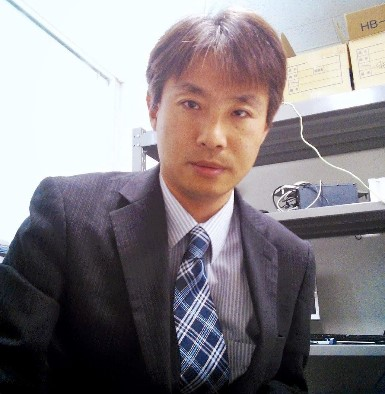
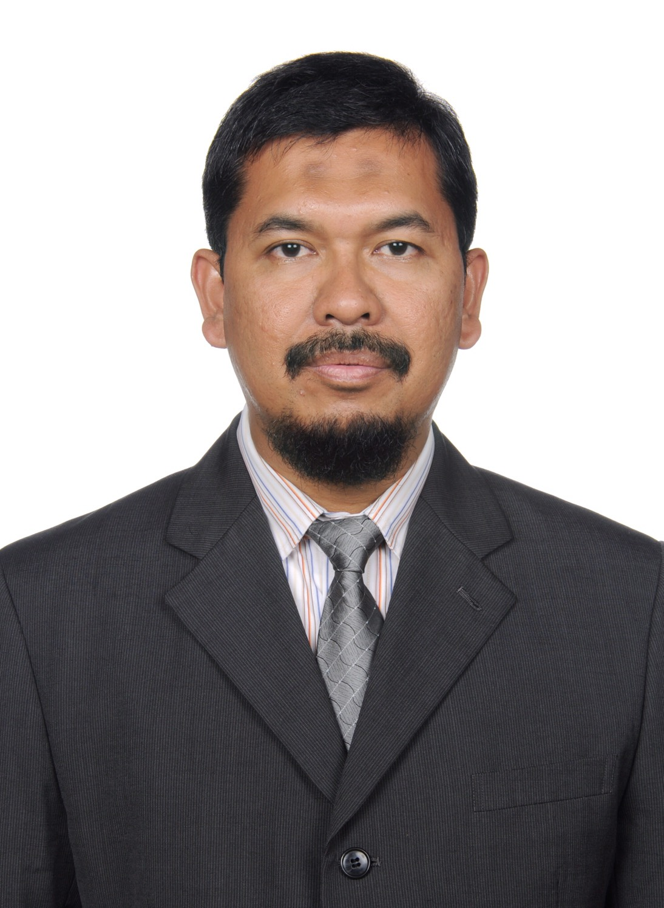
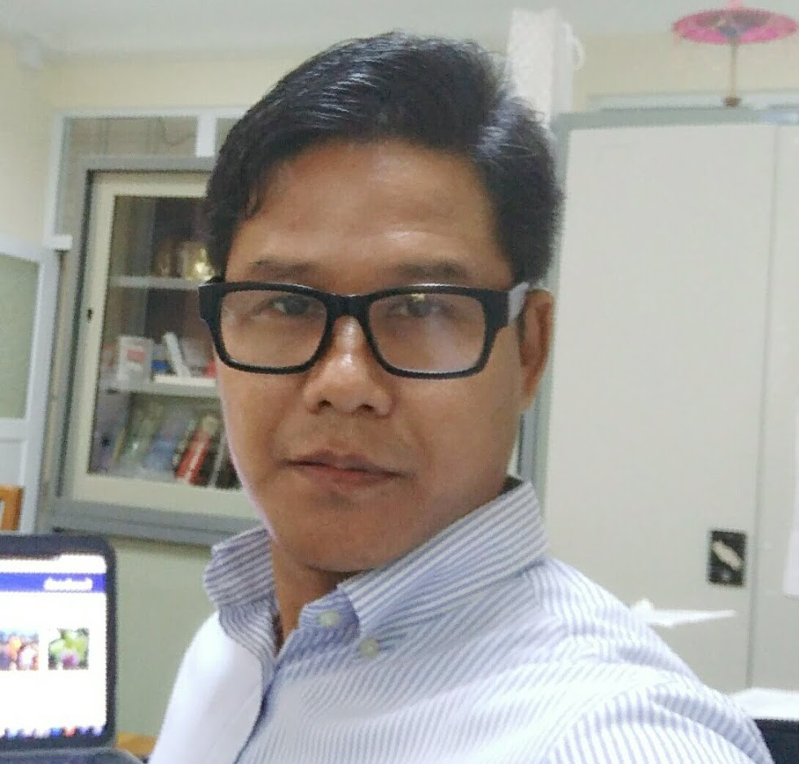
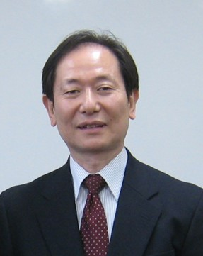
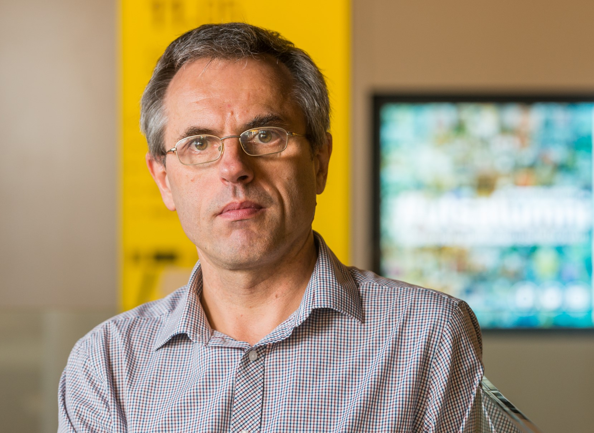
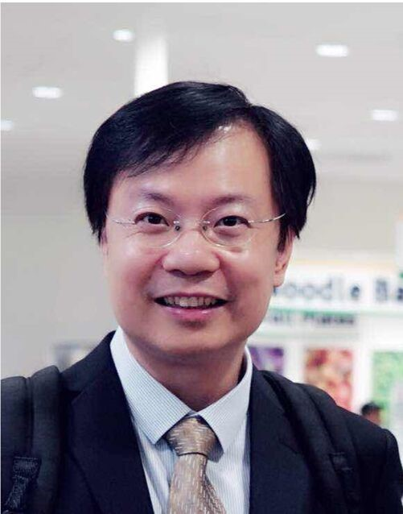
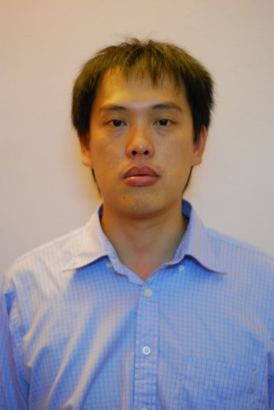

Shingo Yamaguchi
Abstract
In this paper, we proposed a formal model representing the battle between IoT malware “Mirai” and IoT worm “Hajime". We also analyzed the effect of Hajime by using the model. We regarded the battle as a multi-agent system and express it with agent-oriented Petri net called as Petri nets in a Petri net (PN^2). An advantage of PN^2 is not only as a graphical and mathematical modeling tool but also useful as a simulation tool for the battle. We introduce a lifespan and a secondary infection ability to Hajime in order to turn it to a “white-hat” worm. Our simulation result shows that (i) if the lifespan is too short, Hajime would die out and have no effect. (ii) If the lifespan is too long, Hajime would continue to stay at the infected device even though it completed the defense against Mirai. (iii) The higher the secondary infection ability is, the more effective Hajime becomes.
Biographical Sketch
Shingo Yamaguchi received B.E., M.E. and D.E. degrees from Yamaguchi University, Japan, in 1992, 1994 and 2002. He was a Visiting Scholar in University of Illinois at Chicago, US, in 2007. He is currently a Professor in Graduate School of Sciences and Technology for Innovation, Yamaguchi University, Japan. His research interest includes service science and cyber security. He is a Board of Governors Member of IEEE Consumer Electronics Society. He is a Senior Member of IEEE and IEICE.

Trio Adiono
Abstract
In order to achieve high speed and real-time performance of Visible Light Communication (VLC), we proposed the System on Chip (SoC) Hardware Architecture and its implementation. The SoC architecture is designed to optimally realize OFDM based VLC transceiver system processing. The processor consists of IP blocks design, such as FFT/IFFT, Synchronizer, Modulator, Demodulator etc. Beside throughput, other aspects such as the design size, speed, and design cost will be also considered. The proposed design flow includes the system design modeling, SoC architecture design, SoC Implementation, FPGA based prototyping and system verification. The design covers physical and network layer design. The real-time performance of system implementation in the FPGA will be demonstrated.
Biographical Sketch
Dr. Trio Adiono is Professor at the School of Electrical Engineering and Informatics of Institut Teknologi Bandung (ITB). He obtained his Ph.D. degree in VLSI Design from Tokyo Institute of Technology (Titech), Japan. From 2002 to 2004 he was a research fellow of the Japan Society for the Promotion of Science (JSPS) in Titech. In 2005, he was a visiting scholar at MESA+, Twente University, Netherlands. He currently also a Visiting Professor at NTUST, Taiwan. He has published more than 240 papers and journals. He has developed several microchips, such as "Binary Template Matching Processor", Near Field Communication, and 4G Baseband and IoT chip. Currently he is The Head of Electronics Research Group and IC Design Laboratory-ITB. His research interest are Chip Design, Broadband Wireless Communication, Near Field Communication and Visible Light Communication.

Win Zaw
Abstract
Speaker Identification system is the system which allows the user to access the system by making an utterance from the microphone and identifies the current talker out of a set of speakers. In daily life environment, noise is unavoidable and the speech signal recorded from the microphone is corrupted by the background noise. If the input speech signal is contaminated by noise, it happens that the performance and accuracy of the speaker identification system decrease. To solve this problem, power spectral subtraction method is used to eliminate the noise from the noisy input speech signal. In this paper, we emphasized the text-dependent speaker identification system. There are three main modules in the proposed system: background noise suppression, feature extraction and feature matching. Power spectral subtraction with short-time fourier transform (STFT) is used for noise suppression. Mel-frequency Cepstral Coefficients (MFCC) is applied for feature extraction to extract the features from the enhanced speech signal that can later be used to represent each speaker. For feature matching, LBG Vector Quantization (VQ) approach is proposed because it can reduce the amount of data and complexity. The experimental results show that the proposed system is more accurate than the original system and faster in computation than the original one. MATLAB is used for programming to simulate the proposed system.
Biographical Sketch
Win Zaw is a Professor of Computer Engineering and Information Technology Development at Yangon Technological University. Professor Win Zaw received his B.E. in Electronics Engineering from Mandalay Technological University, M.E and Ph.D. in information technology from the National Research Nuclear University MEPhI (Moscow Engineering Physics Institute), Russia. His research interests span both computer networking and data science. Prof. Win Zaw is founder of IEEE Myanmar Subsection and now working as the chair of IEEE Myanmar Subsection. He is also a central committee member and co-chair of IT Technical Division at Myanmar Engineering Society (MES) and Associate Fellow of ASEAN Academy of Engineering and Technology (AAET).
- IoT Sensors Which Persistently Operate in Environments .

Koichiro Ishibashi
Abstract
Numerous numbers of IoT sensors could be distributed to environments to persistently monitor the environments and send the acquired data by wireless manner in the era of Trillion Sensor Universe. Therefore, the IoT sensors need to be low cost and low power for operating with energy harvesting power supply. My research group proposes Beat Sensors as low cost, small size, and low-power IoT sensors. The power consumption of the Beat sensors is so small that they can operate even with using an energy-harvesting power supply. We have demonstrated various kinds of beat sensors, such as temperature Beat sensor, power Beat sensor, and Beat sensors for monitoring water quality [3] and so on. We have also demonstrated that data obtained by the Beat sensors are corrected by error correction algorithms even if communication errors often occur, so that substantial communication range become long. We have further shown that the temperature Beat sensor has an advantage in agricultural applications because the growth of plants can be sensed just by counting the number of the ID Beat signals in receivers. In this presentation, Beat Sensors concept and their advantages will be introduced, mainly focusing on monitoring environments. Future plan of the Beat Sensors are also discussed.
Biographical Sketch
Dr. Koichiro Ishibashi has been a professor of The University of Electro-Communications, Tokyo, Japan since 2011. He has been serving a guest professor at Ho Chi Minh City University of Technology and Ho Chi Minh City University of Science since 2012. He was born in Tokyo Japan in 1958. He graduated from Sophia University in Tokyo Japan in 1980, received PH. D degree from Tokyo Institute of Technology in 1985. He joined Central Research Laboratory, Hitachi Ltd. in 1985, where he had investigated low power technologies for Super H microprocessors and high density SRAMs. From 2004 to 2011, he was in Renesas Electronics where he developed low power IPs mainly for SOCs used in mobile phones. He has presented more than 150 academic papers at international conferences and journals. He was awarded R&D 100 for the development of SH4 Series Microprocessor in 1999. He is a member of IEICE and a Fellow of IEEE. His current interests include IoT technologies including Ultra low power LSI design technology, Technologies for energy harvesting sensor networks and applications, and Medical electronics using contactless sensors and data processing by AI.
Technologies, Applications, Benefits and Challenges

Eryk Dutkiewicz
Abstract
The Internet of Things (IoT) has the potential to enable many new applications and bring econxomic benefits. There are, however, many challenges that need to be overcome to make IoT useful. These challenges include security and trust associated with IoT. In this presentation we discuss IoT technologies and applications as well as their security and trust aspects. Subsequently we describe the concept of the blockchain which was originally designed for secure financial transactions. Its cryptographic security benefits, including user anonymity, fault tolerance, transaction integrity and authentication, can be used to enable security and privacy in IoT. We discuss the benefits, limitations and challenges of using blockchain with IoT. We also describe our IoT-blockchain testbed and overview several of our current IoT-blockchain projects for supply chain tracking.
Biographical Sketch
Eryk Dutkiewicz obtained his Bachelor of Electrical and Electronic Engineering from the University of Adelaide, Australia in 1988, his Master of Science in Applied Mathematics from the University of Adelaide, Australia in 1992 and his PhD (Telecommunications) from the University of Wollongong, Australia in 1996. From 1999 to 2004 he worked at Motorola Laboratories in Sydney where he managed a wireless research laboratory. Since returning to academia in 2004 he has worked closely with industry partners such as Motorola, Freescale, Intel and Nokia. He is currently the Head of School of Electrical and Data Engineering at the University of Technology Sydney in Australia. He is an author of over 300 research papers and several book chapters. He also holds a professorial appointment at Hokkaido University in Japan.

Prof. Jing-Ming Guo
Abstract
Biometrics has prevailed for many applications. For instances, biometrics authentication incorporates with computer science as a form of identification and access control. It can be also used to identify individuals in groups that are under surveillance. Possible identifiers include fingerprint, palm veins, face recognition, DNA, palm print, hand geometry, iris recognition, retina and odour/scent. In this talk, the advances on some major biometrics recognition will be introduced, and subsequently put the focus on the proposed fingerprint and finger vein recognition systems. It is examined that the local stable feature method can be more robust and stable than that of the conventional minutiae-based technique. In addition, various face recognition systems based on individual facial organs will be introduced to examine the impact from each of them.
Biographical Sketch
EProf. Guo received the Ph.D. degree from the Institute of Communication Engineering, National Taiwan University, Taipei, Taiwan, in 2004. He is currently a Professor with the Department of Electrical Engineering and was the former Vice Dean of the College of Electrical Engineering and Computer Science, National Taiwan University of Science and Technology, Taipei, Taiwan. He was also Director of the Innovative Business Incubation Center, Office of Research and Development. His research interests include multimedia signal processing, biometrics, computer vision, and digital halftoning. Prof. Guo is a senior member of the IEEE and a Fellow of the IET. He has been promoted as a Distinguished Professor in 2012 for his significant research contributions. He received the Outstanding Professor Award on Electrical Engineering from Chinese Institute of Electrical Engineering in 2016, the Best Paper Award from the International Computer Symposium in 2014, the Outstanding youth Electrical Engineer Award from Chinese Institute of Electrical Engineering in 2011, the Outstanding young Investigator Award from the Institute of System Engineering in 2011, the Best Paper Award from the IEEE International Conference on System Science and Engineering in 2011, the Excellence Teaching Award in 2009, the Research Excellence Award in 2008, the Acer Dragon Thesis Award in 2005, the Outstanding Paper Awards from IPPR, Computer Vision and Graphic Image Processing in 2005 and 2006, and the Outstanding Faculty Award in 2002 and 2003. Prof. Guo is the Chapter Chair of IEEE Signal Processing Society, Taipei Section. He was the General Chair of many reputed international conferences. He is Associate Editor of the IEEE Transactions on Image Processing, IEEE Transactions on Multimedia, IEEE Signal Processing Letters, the Information Sciences, the Signal Processing, and Journal of Information Science and Engineering.

Prof. Nguyen Huu Thanh
Abstract
Cloud computing has emerged in the recent years as a promising paradigm that facilitates such new service models as Infrastructure-as-a-Service (IaaS), Platform-as-a-Service (PaaS) and Software-as-a-Service (SaaS). These services are becoming more common and require additional network and computing resources. In such paradigm, data centers play a crucial role as they provide the infrastructure for cloud services. Furthermore, data centers nowadays are specifically designed to be extremely over dimensioned in terms of number of servers, switching capacity and of number of deployed links and nodes to guarantee zero-loss and minimum latency packet forwarding. Recent surveys have shown that the energy consumption in a data center considerably contributes to its operation costs. A remarkable part of the large energy volume consumed in data centers today is due to the aforementioned over-provisioning to meet the stringent requirements on reliability. Therefore performance and energy issues are important factors for the design of large multi-tier data centers that can support multiple services.
The talk is divided into two parts. In the first part, the motivations for current research activities on the areas of Green ICT are addressed. Recent hot research topics for energy-efficient networking, especially green data centers and clouds will also be discussed. In the second part, experiences and research results on the areas of energy-efficient data centers at the Future Internet research group (HUST) will be shared, including energy-aware data center virtualization, energy-aware testbed, protocols and optimization algorithms.
Biographical Sketch
Nguyen Huu Thanh received B.S and M.Sc in Electrical Engineering from Hanoi University of Science and Technology, Vietnam in 1993 and 1995, respectively. In 2002, he received his PhD with summa cum laude in Computer Science from the University of Federal Armed Forces Munich (Germany). From 2002 to 2004 he has been with the Fraunhofer Institute for Open Communication Systems (FOKUS) in Berlin, Germany. From 2004 until now Nguyen Huu Thanh has been working as associate professor in the School of Electronics and Telecommunications, Hanoi University of Science and Technology, Vietnam. His research interests include radio resource management in 4G/5G systems, QoS/QoE, network security, the Future Internet, energy-efficient networking and software-defined networking. He is the leader and member of several national and international research projects on network security and the Future Internet. He was the Chair of IEEE Vietnam Section (2013 - 2018) and currently the Vice-President of the Radio Electronics Association of Vietnam (REV).
Minoru Okada and Duong Quang Thang
Abstract
There are great demands for wireless power transfer (WPT) for mobile and IoT (Internet of Things) devices as well as battery charging for moving electric vehicles (EV). Current WPT systems based on near-field coupling have problems in its limitation in the receiver positions and the power transfer efficiency. This presentation introduces WPT with multiple transmitters and receivers, or, a multiple-input-multiple-output (MIMO) WPT system for solving the mobility and efficiency problems in the current WPT systems. Since the proposed MIMO-WPT system deploys multiple transmitters over the area of interest, it is capable of expanding the mobility limitation. WPT using multiple transmitters and receivers could reduce the power transfer efficiency due to mutual coupling among them. We can solve this mutual coupling problem by optimizing the impedance-matching circuit. The proposed MIMO-WPT system achieves higher power transfer efficiency than the conventional single transmitter and receiver based WPT systems
Biographical Sketch
Minoru Okada received the B.E. degree in communications engineering from the University of Electro-Communications, Tokyo, Japan, in 1990. He received the M.E and Ph.D. degrees in communications engineering from Osaka University, Osaka, Japan, in 1992 and 1998, respectively. From 1993 to 2000, he was a Research Associate at Osaka University. From 1999 to 2000, he was a Visiting Research Fellow at University of Southampton, U.K. In 2000, he joined the Graduate School of Information Science, Nara Institute of Science and Technology, Nara, Japan, as an Associate Professor and became a Professor in 2006. His research interest is wireless communications, including WLAN, digital broadcasting, and satellite communications. Dr. Okada is a member of the Institute of Image, Information, and Television Engineers of Japan (ITEJ), the Institute of Television Engineers of Japan, the Institute of Electrical, Information, and Communication Engineers of Japan (IEICE), and the Information Processing Society of Japan (IPSJ). He received the Young Engineer Award from IEICE in 1999.